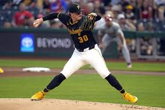
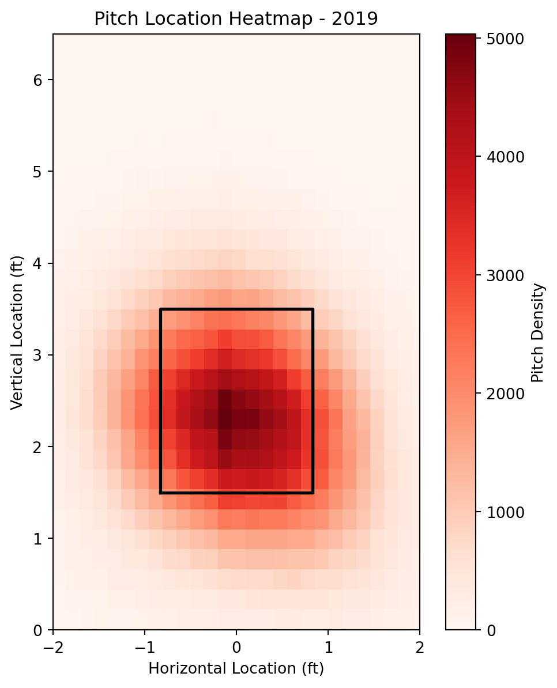

Code
import matplotlib.pyplot as plt
import pandas as pd
df = pd.read_csv("2019_pitches.csv")Cameron Hamilton
September 29, 2025

Far too often, I see (and have created) visualizations that are cluttered, hard to read, and honestly look unprofessional and messy. Visualizations can be hard to create as well. However, by using the matplotlib library in python we can create the best visualizations. This is a tutorial that will walk you through how to use matplotlib to create clean, easy to read and professional looking visualizations!! We will be using a heatmap as an example, but the principles can be applied to any type of visualization.
This tutorial assumes you have a basic understanding of python and matplotlib! So with that, we’ll dive right into it. if you’re ever wanting a better explanation of matplot lib check out this github repository (its the offical one)! Official Github Matplotlib Repository
In order to accomplish this lab you need to have the matplotlib and your chosen data if not, you will not be able to accomplish this tutorial!
The matplotlib python library allows you to create more meaningful and detailed plots. Those plots will be better designed and more informative to your audience.
Pandas is what are going to use to import our .csv file to a dataframe which allows us to create plots and do analysis on it! For more on pandas check out the offical pandas website!! Official Pandas Website
After you’ve loaded in matplotlib and pandas the next most important part is to load in your data and convert it to data frames for analysis! For this example, I’ll be
First, we’ll use the pandtas library to convert the csv file into a data frame, remove the null values and change the data frame names to x and y for simplicity in plotting.
With clean data, we can set up our plot environment. Here, we’ll use a 2D histogram (think of it as combining x and y histograms into a grid).
# Set figure size
plt.figure(figsize=(6, 7))
# Create 2D histogram
plt.hist2d(x, y, bins=75, cmap='Reds')
# Add gradient legend
plt.colorbar(label='Pitch Density')
# Draw strike zone
plt.plot([-0.83, -0.83, 0.83, 0.83, -0.83],
[1.5, 3.5, 3.5, 1.5, 1.5],
color='black', linewidth=2)
# Adjust viewing window
plt.xlim(-2, 2)
plt.ylim(0, 6.5)
# Add labels and title
plt.xlabel("Horizontal Location (ft)")
plt.ylabel("Vertical Location (ft)")
plt.title("Pitch Location Heatmap - 2019")
# Keep square aspect ratio
plt.gca().set_aspect('equal')
plt.show()
The plt.show() function displays your visualization. But to really make it effective, you should always consider adding labels, context, and guides for your audience.
What we did in this tutorial: - Used matplotlib to create a more mreaningful visualization - Used pandas in conjuncture with matplotlib - Created a basic visualiaztion - Added a bunch of different cosmestic helps to our visualization - Added a gradient legend - Adjusted the viewable dimensions to see 2 feet right or left of the strike zone and up to 6.5 feet. - Added labels for to better describe what I want my viewer to know about the graph.
Hopefully this tutorial has helped you understand how to create clear, professional visualizations in matplotlib. Strong visualization skills are essential in data science—they allow you to share insights, not just numbers.
So go out and try it on your own!! Find a dataset for something that you like and create a cool visualization for it, good luck!!
---
title: "Matplotlib Tutorial: Baseball Edition"
author: Cameron Hamilton
date: "2025-09-29"
format:
html:
code-fold: true
toc: true
---
{width=50% fig-align="center"}
# Batter Up!!
Far too often, I see (and have created) visualizations that are cluttered, hard to read, and honestly look unprofessional and messy. Visualizations can be hard to create as well. However, by using the matplotlib library in python we can create the best visualizations. This is a tutorial that will walk you through how to use matplotlib to create clean, easy to read and professional looking visualizations!! We will be using a heatmap as an example, but the principles can be applied to any type of visualization.
## First Base
This tutorial assumes you have a basic understanding of python and matplotlib! So with that, we'll dive right into it. if you're ever wanting a better explanation of matplot lib check out this github repository (its the offical one)! [Official Github Matplotlib Repository](https://github.com/matplotlib/matplotlib)
### Leading off
In order to accomplish this lab **you need to have the matplotlib and your chosen data** if not, *you will not be able to accomplish this tutorial!*
```{python}
import matplotlib.pyplot as plt
import pandas as pd
df = pd.read_csv("2019_pitches.csv")
```
### matplotlib and pandas
The matplotlib python library allows you to create more meaningful and detailed plots. Those plots will be better designed and more informative to your audience.
Pandas is what are going to use to import our .csv file to a dataframe which allows us to create plots and do analysis on it! For more on pandas check out the offical pandas website!! [Official Pandas Website](https://pandas.pydata.org/)
## Second Base
After you've loaded in matplotlib and pandas the next most important part is to load in your data and convert it to data frames for analysis! For this example, I'll be
First, we'll use the pandtas library to convert the csv file into a data frame, remove the null values and change the data frame names to x and y for simplicity in plotting.
```{python}
# Convert to numeric
df['px'] = pd.to_numeric(df['px'], errors='coerce')
df['pz'] = pd.to_numeric(df['pz'], errors='coerce')
# Remove null values
df = df.dropna(subset=['px', 'pz'])
# Simplify for plotting
x = df['px']
y = df['pz']
```
## Third Base
With clean data, we can set up our plot environment. Here, we’ll use a 2D histogram (think of it as combining x and y histograms into a grid).
### Important reminders when it comes to making plots.
- Figure size matters - it affects readability,
- Trial and error is often needed (e.g. selecting the bin size),
- Colors can really make your data pop!
```{python}
# Set figure size
plt.figure(figsize=(6, 7))
# Create 2D histogram
plt.hist2d(x, y, bins=75, cmap='Reds')
# Add gradient legend
plt.colorbar(label='Pitch Density')
# Draw strike zone
plt.plot([-0.83, -0.83, 0.83, 0.83, -0.83],
[1.5, 3.5, 3.5, 1.5, 1.5],
color='black', linewidth=2)
# Adjust viewing window
plt.xlim(-2, 2)
plt.ylim(0, 6.5)
# Add labels and title
plt.xlabel("Horizontal Location (ft)")
plt.ylabel("Vertical Location (ft)")
plt.title("Pitch Location Heatmap - 2019")
# Keep square aspect ratio
plt.gca().set_aspect('equal')
plt.show()
```
## Home Stretch
The `plt.show()` function displays your visualization. But to really make it effective, you should always consider adding labels, context, and guides for your audience.
**What we did in this tutorial:**
- Used matplotlib to create a more mreaningful visualization
- Used pandas in conjuncture with matplotlib
- Created a basic visualiaztion
- Added a bunch of different cosmestic helps to our visualization
- Added a gradient legend
- Adjusted the viewable dimensions to see 2 feet right or left of the strike zone and up to 6.5 feet.
- Added labels for to better describe what I want my viewer to know about the graph.
## Home Plate
Hopefully this tutorial has helped you understand how to create clear, professional visualizations in matplotlib. Strong visualization skills are essential in data science—they allow you to share insights, not just numbers.
So go out and try it on your own!! Find a dataset for something that you like and create a cool visualization for it, good luck!!